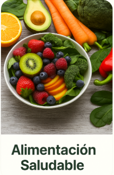
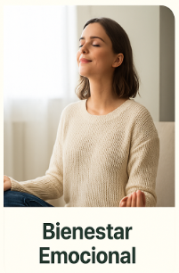

Alimentación saludable
Consejos y recetas para nutrir tu cuerpo con alimentos naturales, frescos y equilibrados.
Ejercicio físico
Rutinas simples y efectivas para mantenerte activo y mejorar tu salud día a día.

Bienestar emocional
Técnicas y recursos para cuidar tu mente, reducir el estrés y vivir con más paz interior.